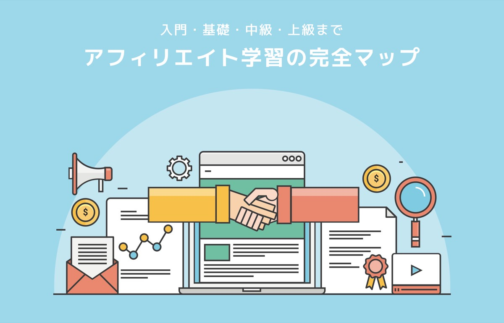

アフィリエイト学習の完全マップ｜知識ゼロ→月10万円を目指す方法

アフィリエイトの基本から中級者向けのテクニックまでをまとめました。
『アフィリエイトが何なのかよく分からない』という人から、『現在月３万PVほどあるけど収益アップに伸び悩んでいる』といった方向けのまとめページです。
このページを上から順番に読んでいくことで、アフィリエイトの基本と応用を学ぶことができ、月10万円以上の収益を目指せるレベルになります。
世間的には「アフィリエイトなんて怪しいよ」って思われていますが、そんなことはない。というか怪しくたっていいんです。
仮に怪しいアフィリエイトだったとしても、毎月の固定収入は人生を豊かにします。僕自身もこれまでの人生でアフィリエイトの恩恵を受けてきました。この体験を広めたいと思い、アフィリエイト知識のまとめページを作成しました。
それでは下記よりご覧くださいませ。
補足：記事の信頼性
当サイトのアフィリエイト収益は、月100万円を超えています。記事の信頼性担保になるのでは、と思っています。なお、Webマーケティングの全体的なノウハウは「個人で稼ぎ、自由に生きる為の、Webマーケ入門教材(有料)」で解説しています。
アフィリエイトの入門知識編：まずはここから理解しよう。
アフィリエイトを始めるには、『基礎理解→サイト作成の流れ』がオススメです。
下記３本の記事を読むことで、アフィリエイトの全般知識と具体的にやるべきことが分かります。
【超初心者向け】アフィリエイトとは？【意味・仕組みを簡単に解説】
「アフィリエイトってなに？ 用語の意味や仕組み、メリットとデメリットを知りたいな。」←こういった疑問に答えます。本記事の内容：１．アフィリエイトとは？用語の意味と仕組み解説／２．アフィリエイトのメリットとデメリット【２つの視点から解説】／３．アフィリエイトで売れやすい商品とは【高利益率 × コンプレックス】／４．アフィリエイトで稼ぐ方法【３つの手順で解説】という流れで解説します。

【超簡単】アフィリエイトを始める３つの手順【３万円稼げる保証付き】
「アフィリエイトを始める手順を知りたいなぁ。パソコン初心者なので、だれでも分かるように親切な解説をして欲しい。あとは稼ぐコツも合わせて知っておきたいな。」←こういった疑問に答えます。本記事では、アフィリエイトを始める手順と稼ぐための３つのコツを解説しました。
アフィリエイト初心者にオススメな本７冊【行動の重要性も解説する】
アフィリエイトを始めたいなぁ。初心者にオススメの本はなんだろう？ 第一歩として概要理解できる本を知りたいよ。←こういった疑問に答えます。本記事では、アフィリエイト初心者にオススメな本と具体的な行動の重要性を解説しました。本でアフィリエイト知識が増えたとしても、実際に手を動かさない限り、本の代金はただの赤字です。
アフィリエイトの基礎知識編：一般人より詳しいレベルに到達しよう。
アフィリエイトの基礎知識として、ASP・アフィ手法・商材選びを学びましょう。
また、６つ目の記事では、先人のサイト（稼いでいるサイト）からノウハウ吸収する方法もまとめています。
【収益UP】おすすめなアフィリエイトサイト９選【裏ワザあり】
アフィリエイトで稼ぐコツをまとめました。アフィリエイトの為にブログを開設したけど、収益が数百円…。０円じゃないから良かったけど、このあとはどのように進めていけば分からないという悩みを抱えた方向けです。アフィリエイトの仕組みから、オススメASP、さらにはブログ収益を爆発的に伸ばす裏ワザをまとめました。
【完全な基礎】アフィリエイトの種類と手法３選【向き不向きも解説】
「アフィリエイトにはどういった種類があるんだろう…。全体像を知った上で、自分に向いている手法でアフィリエイトを始めたいよ。」←こういった疑問をお持ちの方へ。本記事ではアフィリエイトの『種類・手法』と『向き不向き』を解説します。現在の僕はSEOアフィリエイトが得意でして、これで生計が立つレベルで収益化（ほぼ全自動）できています。
【勉強は不要】アフィリエイト初心者が商品選びをする前にやるべき事
アフィリエイトの商品選びに迷っている方向け。本記事では、１．初心者は『アフィリエイト商品の選び方』を学ぶ必要はない理由／２．アフィリエイト初心者が、商品選びをする前にやるべきこと／３．月３万PV以上の中級者向け：アフィリエイト商品の選び方／４．アフィリエイト商品を選ぶ際の３つのコツ／この順番で解説しています。
【初心者に告ぐ】アフィリエイトASPは比較する必要がない【理由を述べる】
「アフィリエイトASPを比較したい。どのASPがおすすめなのかな？各社を比較しつつ、最適なASPを選びたいな。」←こういった疑問に答えます。本記事の内容：１．初心者がアフィリエイトASPを比較する価値はない。／２．初心者が知っておくべきアフィリエイトASPと周辺知識
【理論】アフィリエイトが儲かる理由を論理的に解説する【センス必須】
「アフィリエイトを始めようと思っているけど、本当に儲かるのか気になるなぁ…。向き不向きも合わせて知りたいです。」←こういった疑問に答えます。本記事では『アフィリエイトが儲かる理由』と『アフィリエイトで儲かるのはセンスのある一部の人だけなのか』という疑問に詳しく答えていきます。
【成功から学ぶ】アフィリエイトブログ例：３選【収益化設計も公開】
「アフィリエイトブログを始めたいけど、参考になるブログの例を見たいな。成功しているサイトを真似すれば自分のアフィ報酬も爆増するハズ…！」←こういった方向け。本記事では、『成功しているアフィリエイトブログ例』と『アフィリエイトブログの収益元となる記事の”調べ方”』を解説しました。
アフィリエイトの初級知識編：スキルアップしつつ、やる気を維持しよう。
アフィリエイトで大半の人が失敗する理由、それは挫折です。
アフィリエイトは不明確なゴールに向けて走り続けないといけません。
日々の作業を通じてスキルアップ（特にライティングスキルが大切）しつつ、モチベーションを維持する方法の記事一覧です。
「アフィリエイト無理…」 ←勘違いは１つだけです。【断言する】
「アフィリエイトを続けてきたけど、、、これ無理ゲーじゃないか？出口のない戦いをしているようで疲れてきた…。どうしらたいいんだろう…。」←こういった疑問に答えます。本記事では『まずは1,000時間取り組むことの重要性』と『論理的思考能力』の大切さをまとめました。
アフィリエイトに必要な２つのスキル【やる気を維持する最高の方法】
「アフィリエイトに必要なスキルを知りたい。必要なスキルと学習方法、あと難易度も知りたいな。」←こういった疑問に答えます。本記事の内容：１．アフィリエイトに必要なスキルを分解する【２つだけ】／２．アフィリエイトでスキル以上に大切なこと【行動力と継続力】／３．アフィリエイトでやる気を維持する最高の方法の順番で解説します。
【ブログ特化】収益UPするアフィリエイト記事の書き方【実例公開】
「ブログからのアフィリエイト収入が増えてきたけど、これで食べていくのはまだまだ無理だなぁ…。アフィリエイター達はガッポリ稼いでいるみたいだけど、、、記事の書き方にコツはあるのかな？」←こんな疑問に答えます。本記事では『ブロガー向け：収益の上がるアフィリエイト記事の書き方』と『アフィリエイトの記事ライティング力を高める方法』をまとめました
アフィリエイトの仕組みとセットで覚えるべき、消費者視点の話をする
「アフィリエイトの仕組みを知りたい。これからアフィリエイトを始めてみたいけど、どういった構造なんだろう。事前に知っておくべき情報は何なのかな。」←こういった疑問に答えます。本記事の内容／１．アフィリエイトの基本的な仕組みとは／２．アフィリエイトの仕組みとセットで覚えるべき事は消費者視点である話／３．アフィリエイトの仕組みを理解したあとにやるべきことの順番で解説します。

一般人「アフィリエイトは怪しいよね」 ←これがチャンスである理由
「アフィリエイトという言葉を聞いたけど、なんとも怪しい…。興味あるけど、手を出すか迷うなぁ…。」←こういった疑問に答えます。本記事では、アフィリエイトが怪しいと思われる理由を解説します。なお、結論としては『アフィリエイトは全然怪しくない』ことが分かるので、ぜひ最後までお付き合いください。
アフィリエイトの中級知識編：収入をニョキッと伸ばしましょう。
ここからは、月３万PV以上のサイト運営者向け。
アフィ収入をグイッと伸ばすための、セールスライティング・横展開・自動化を学びましょう。
【悪用厳禁】アフィリエイトに効果絶大なセールスライティング【学習法】
「アフィリエイトの為にセールスライティングを学びたい。」←こういった疑問に答えます。本記事の内容：１．アフィリエイト収入とセールスライティングが密接に関係する理由／２．セールスライティングで競合サイトと差別化する方法／３．アフィリエイトに効果的なセールスライティングを学ぶ方法
【月３万円稼げる】アフィリエイトのコツ２つ【分析と作業方法を解説】
「アフィリエイトブログを頑張っているけど、、、マジで稼げない笑。アフィリエイトってなにかコツとかあるのかな？ 3,000円アフィリエイターの僕に教えてください。」←こんな疑問に答えます。本記事の内容では、ブログアフィリエイトのコツを惜しみなく紹介しました。現在の僕の状況として、アフィリエイトで自動収益を作りつつ、企業向けのSEOコンサルもしています。
【要注意】あなたがアフィリエイト記事外注で失敗する理由【サイト公開あり】
「アフィリエイトサイトを作っているけど、記事ライティングに疲れた…。現在はあまり儲かっていないけど、記事外注して楽をしたいなぁ。どんな感じに外注すべきかな…？失敗したくないのでノウハウを知りたいな。」←こういった気持ちでいる方は要注意。そのまま記事外注すると、お金を捨てることになります。
月３万PV達成後にアフィリエイトをやめる人が多い・・・その理由とは？
また、月３万PVくらいでアフィリエイトを辞めようとする人が多いです。
その理由は、『あまり稼げないし面倒に感じてくる』から。
しかし、月３万PVを作れるなら、月10万円の自動収入はすぐ近くです。
下記記事を読みつつ、もう一歩を踏み出してみてください。
【簡単な証明】アフィリエイトで報酬発生しない理由【数式あり】
「アフィリエイトを頑張ってるけど、報酬が全然発生しない…。どうすべきか分からないからアドバイスが欲しいな。」←こういった疑問に答えます。本記事の内容：１．アフィリエイトで”報酬が発生しない理由”は証明できます／２．アフィリエイトで報酬発生しない初心者がやるべきこと／３．アフィリエイトで報酬発生率を高めるライティングテクニック２つの順番で解説します。
アフィリエイトで５年間の安定収入なんて不可能【月10万の中級者向け】
「アフィリエイトで安定収入が欲しいなぁ。どういったジャンルに参入し、どういったテクニックを駆使したらアフィリエイトが５年間の安定収入になるんだろう。」←こんな疑問に答えます。本記事では、アフィリエイトで５年間の安定収入なんて不可能な話とアフィリエイトで安定収入を生むための思考法を書いています。
【改善不可】アフィリエイトで伸び悩むなら新規サイトを作るべき話
「アフィリエイトで複数サイト運営を考えている。しかし、新規で作るとまた時間がかかりそうだ。果たしてどうすべきだろう。」←こういった疑問に答えます。本記事の内容：１．アフィリエイトで伸び悩むなら新規サイトを作るべき／２．アフィリエイトで新規サイトを立ち上げても劇的な改善は見込めない話／３．新規でアフィリエイトサイトを立ち上げる際に気をつけることの順番で解説します。
アフィリエイトの便利ツール編：シンプル is ベスト
僕が使っているアフィリエイトツールのまとめです。
どれもシンプルかつ、定番ツールばかり。ツールはそこまでこだわらなくて大丈夫ですよ。
アフィリエイト歴５年の僕が愛用するブログツール【ランキング紹介】
「ブログアフィリエイトにオススメなツールを知りたいなぁ。上級者が愛用しているツールは何だろう。」←こういった疑問に答えます。本記事では、ブログアフィリエイト歴５年の僕が愛用するツールやサイトをランキング形式で紹介します。
【断言】アフィリエイトにおすすめなサーバーは１つだけ【開発者が語る】
「アフィリエイトを始めるにあたりオススメなサーバーを知りたいなぁ。全く知識がないので、初心者でも簡単に使えるサーバー希望です。どれを選ぶべきだろう？」←こういった疑問に答えます。本記事の内容：１．アフィリエイト初心者にオススメなサーバーはMixhostの一択です／２．アフィリエイトサイトをMixhostで構築する方法【中学生OK】／３．アフィリエイターが最低限は知っておくべきサーバー知識の順番で解説します。
【宣言】アフィリエイトにおすすめなWordPressテーマは存在しない。
「アフィリエイトにおすすめなWordPressテーマを知りたいなぁ。売上アップに繋がるおすすめテーマをいくつか教えてください。」←こういった疑問に答えます。結論としてはアフィリエイトにおすすめなテーマは存在しません。初心者なら無難なテーマを選んでおけばOKです。その理由と無難なWordPressテーマをピックアップしました。
アフィリエイトのカテゴリ別知識編：どのジャンルを攻めますか？
アフィリエイトを始めるならカテゴリ選びは大切です。
下記３記事では、僕が運営する実サイトを公開しつつ、その手法をまとめました。
ぶっちゃけ、そのまま真似しても稼げるレベルです。
じっくりご覧あれ。
英語ブログでアフィリエイトする価値とは【将来性と収益性を考察】
アフィリエイト初心者で「英語学習ブログでのアフィリエイトをしようかな…。将来性や収益性、うまく稼ぐコツを知りたいなぁ…。」といった悩みを抱える方向け。本記事では、英語学習ブログのアフィリエイト価値（収益性・オススメな理由・稼ぎ方）をまとめました。運営サイトを公開しつつ語ります。
旅行系アフィリエイトで稼ぐなんて無理です笑【理由と実例で解説】
「世界を旅行しながらアフィリエイトで稼ぎたいなぁ。旅行系のアフィリエイト（観光地紹介・ホテル紹介）でうまく稼ぐ方法ってあるのかな？」←こういった疑問に答えます。いきなり残念なお知らせですが、旅行系アフィリエイトではほぼ稼げません。なぜか？その理由を当サイトの記事を使って解説しつつ、アフィリエイト思考法もお話します。
アプリ系アフィリエイトで稼ぐコツと実例【収入目安も公開する】
「アプリのアフィリエイトに興味があるな。実際に稼げるのだろうか？ 収入目安や稼ぐコツ、あとはオススメASPを知りたいな。」←こういった疑問に答えます。本記事の内容：１．アプリ系アフィリエイトの収入目安【実例付き】／２．アプリ系アフィリエイトで稼ぐコツとは【参考サイトあり】／３．アプリ系アフィリエイトでおすすめなASP【３選】
アフィリエイトに関するコラム：暇つぶしにどうぞ(｀･ω･´)ゞ
下記より、アフィリエイトコラムです。
僕が日々考えているアフィリエイト論みたいなものなので、ビールのおつまみとかにどうぞ。
アフィリエイト初心者がセミナー参加する価値とは【苦行のススメ】
「アフィリエイトを始めようかなぁ。とりあえずセミナーとかに参加してみようかな。。おすすめは何だろう？」←こういった疑問に答えます。本記事の内容：１．アフィリエイト初心者がセミナー参加前知っておくべき事／２．アフィリエイト初心者がセミナーに参加する価値とは／３．アフィリエイト初心者がセミナー参加前にやるべきことの順番で解説します。
アフィリエイトで稼ぐ僕が”普段の生活”で意識している事【手順も解説】
「アフィリエイトで稼ぐ方法を知りたい。アフィリエイトで不労収入を得ている人はどういった稼ぎ方をしているんだろう。」←こういった疑問に答えます。本記事の内容：１．アフィリエイトで稼ぐ際に覚えておくべき事／２．アフィリエイトで稼ぐ僕が”普段の生活”で意識している事／３．アフィリエイトで稼ぐ３つの手順【分解して解説】の順番で解説します。
【2017年】実名でアフィリエイトを始めるメリット【顔出しで語る】
「アフィリエイトを始めようと思っているけど、実名か匿名で迷うなぁ。匿名の方が安全そうだけど、実名のメリットって何だろう…。」←こういった疑問を持つ方向け。本記事では、実名でアフィリエイトを始めることのメリットとデメリットをまとめました。結論から言うと、これからの時代を考えると実名がおすすめです。
「アフィリエイトなんてやめとけ」という人は人生を損している【宣言】
「アフィリエイトはやめとくべきなのだろうか？アフィリエイトを始めようと思ったけど、大半は失敗するという話を聞いた。やるべきか、やらないべきか、どうしたらいいだろう？」←こういった疑問に答えます。本記事では、アフィリエイトなんてやめとけという人が人生を損している理由を語ります。
【2017年】アフィリエイトにおすすめなブログサイト比較【結論です】
「アフィリエイトでおすすめなブログサイトを探している。2017年現在の選択肢としてはどれが良いんだろう…？」←こういった疑問に答えます。結論、2017年現在、アフィリエイトでおすすめな無料ブログサイトは２つだけです。その理由を各種ブログサイトを比較しつつまとめました。
アフィリエイトのやり方・方法はただ１つ【稼ぎ方は無限にあります】
「アフィリエイトのやり方・方法を知りたい。これからアフィリエイトを始めるので、基本的なやり方と覚えておくべき事を知りたい。」←こういった疑問に答えます。本記事の内容：１．アフィリエイトのやり方・方法はただ１つ【数式あり】／２．アフィリエイトで”稼ぐ正解”は無限にある【型を作る】／３．アフィリエイトのやり方や方法を検索し続ける価値はなしの順番で解説します。
【超初心者向け】副業としてアフィリエイトをおすすめする理由と手順
「副業としてアフィリエイトを始めようかな。副収入を作りたい気持ちは強いけど、、、アフィリエイトって本当に稼げるのかな？」←こういった疑問に答えます。本記事では、副業としてアフィリエイトをおすすめする理由と始め方の手順を解説します。更には、初心者からのよくある質問『かける時間・向き不向き・コツ』にも触れています。
【誰でも簡単】アフィリエイトで簡単に１０万円を稼ぐ方法【秒速】
「誰でも簡単にできるアフィリエイト方法ってあるのかな？初心者の僕に教えてください。」←こういった疑問に答えます。本記事では、誰でも簡単にアフィリエイトで10万円稼ぐ方法を解説します。なお、最初にネタバレするとセルフバックの話です。「なんだセルフバックかよ」って思った方はそっとページを閉じるか、記事後半から読み始めてください。